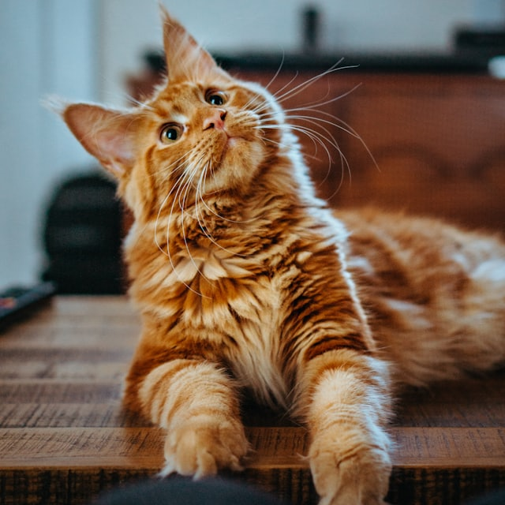
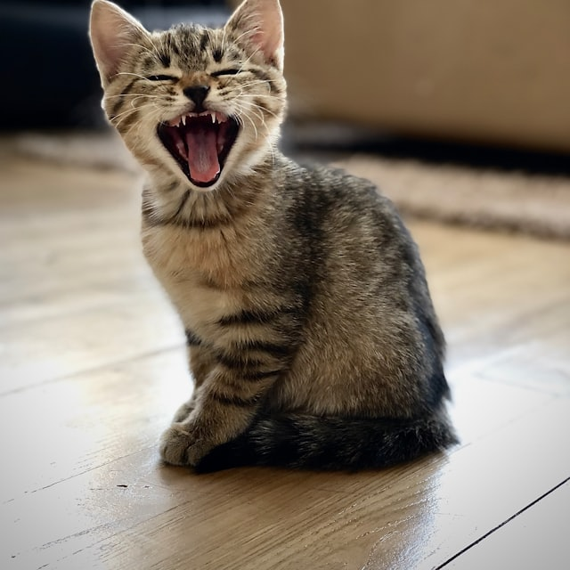
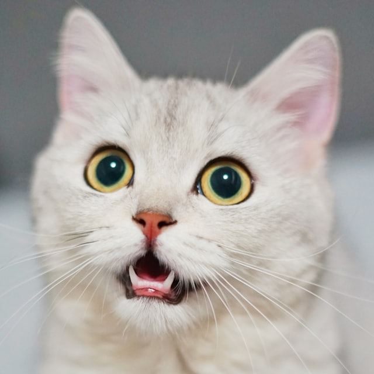
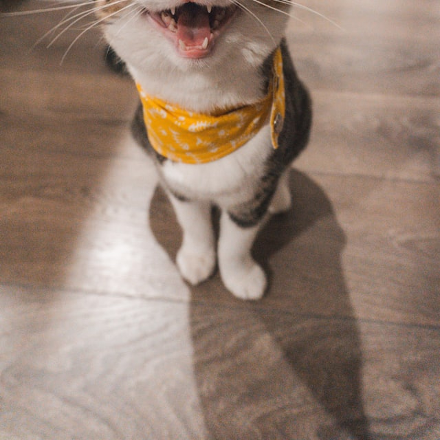
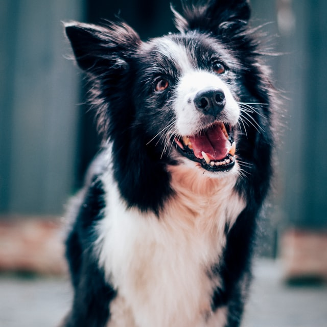
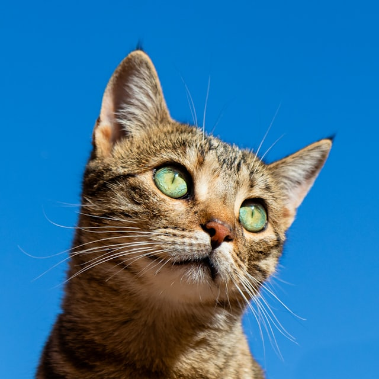

Pasaron por nuestra consulta.
Hoy vuelven a estar bien






Con suerte, un animal entra en tu vida, te roba el corazón y lo cambia todo. Nosotros cuidamos de que siga sano y a tu lado, muchos años.
Lo que cuentan las familias
-
Llegamos a las tres de la mañana con la perra convulsionando. Nos atendieron en el momento y, mientras la estabilizaban, alguien salió cada veinte minutos a contarnos cómo iba. Eso no se paga.
Carmen R. Tutora de Nala, mestiza de 9 años -
Me dieron el presupuesto de la operación por escrito antes de entrar a quirófano y la factura final fue exactamente esa. Después de dos clínicas anteriores, casi me sorprendió.
Nacho M. Tutor de Tofu, bulldog francés -
Mi gata es imposible en el veterinario. La sala felina y que no la forzaran cambiaron la visita entera: salió andando sola del transportín.
Paula S. Tutora de Uma, gata europea -
Estuvo cinco días ingresado tras la cirugía. Llamada todos los días a la misma hora, con lo bueno y lo malo. Volví a dormir sabiendo que alguien estaba con él de madrugada.
Sergio L. Tutor de Bruno, pastor alemán
Clínica Veterinaria Vitalis · Madrid